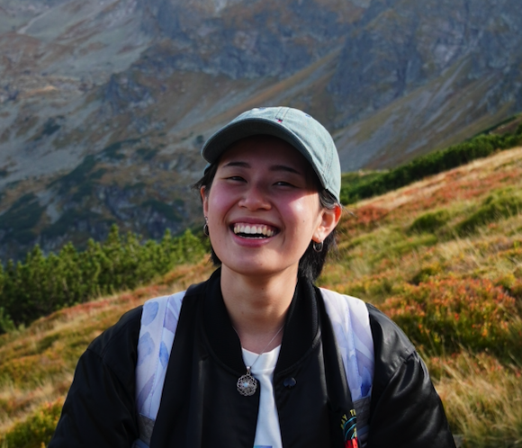

Hi visitor! My name is Josi, a huge bubble tea enthusiast that was born and raised in Taiwan. I used to be a walking tour guide in Taipei for almost a year. To provide the personalized suggestion to my customers, I made a bubble tea website and a little quiz to find your destiny drink. Feel free to take a look! (laptop works better) I finished my bachelor degree in Slavic language and literature in NCCU in Taipei. I love to cook, draw, and learn pole dancing.
Here is a list of language I speak:
This is a link to the website of National Chenchi University This is a link to the bubble tea website I made
| Prior knowledge | My prior knowledge is mostly focused on Russian literature and old Chinese caligraphy. |
| Espectations | I hope to extend my knowledge and skills about manuscripts and the digital skills with proceessing them. |